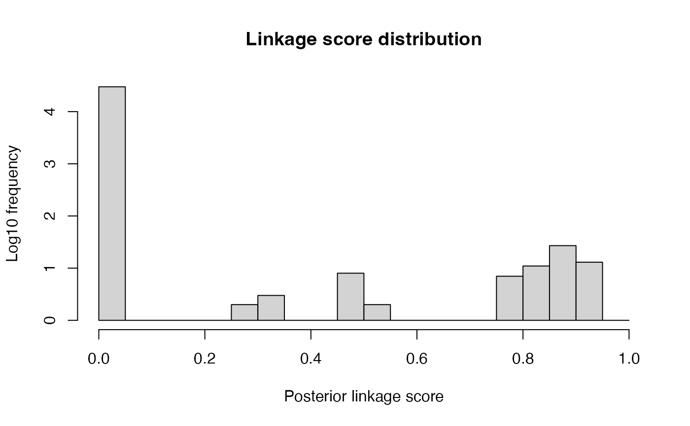
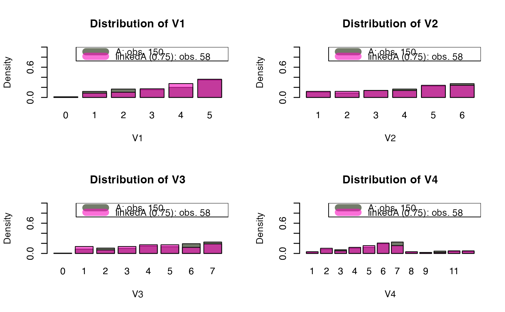
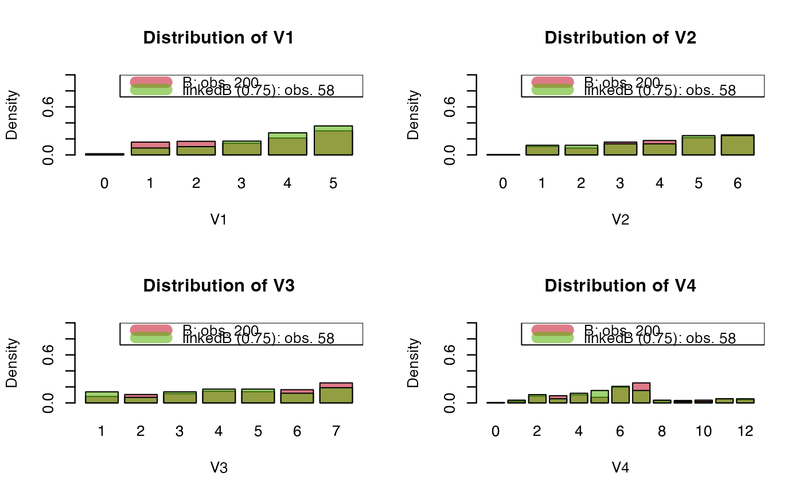
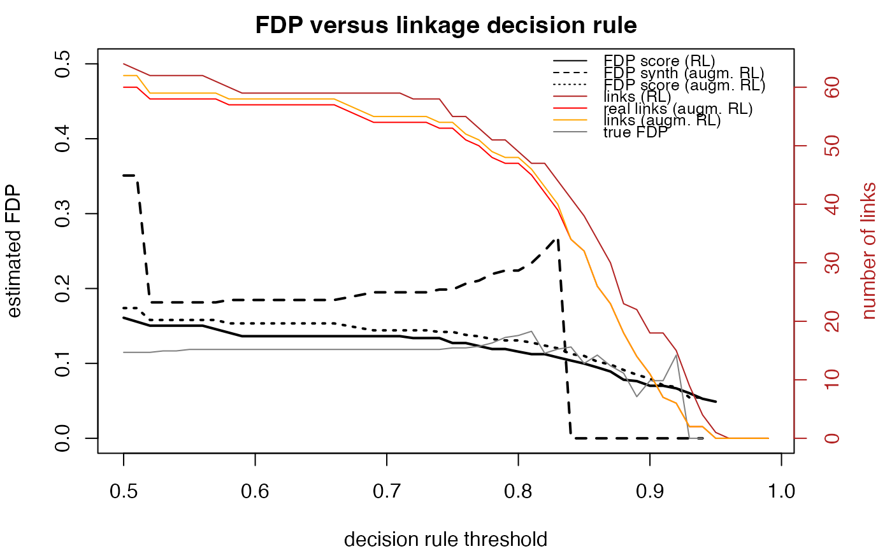
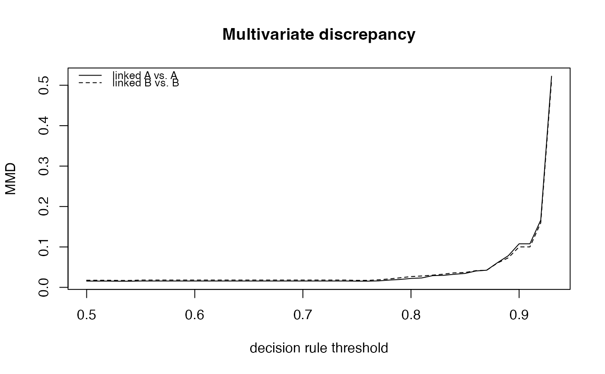
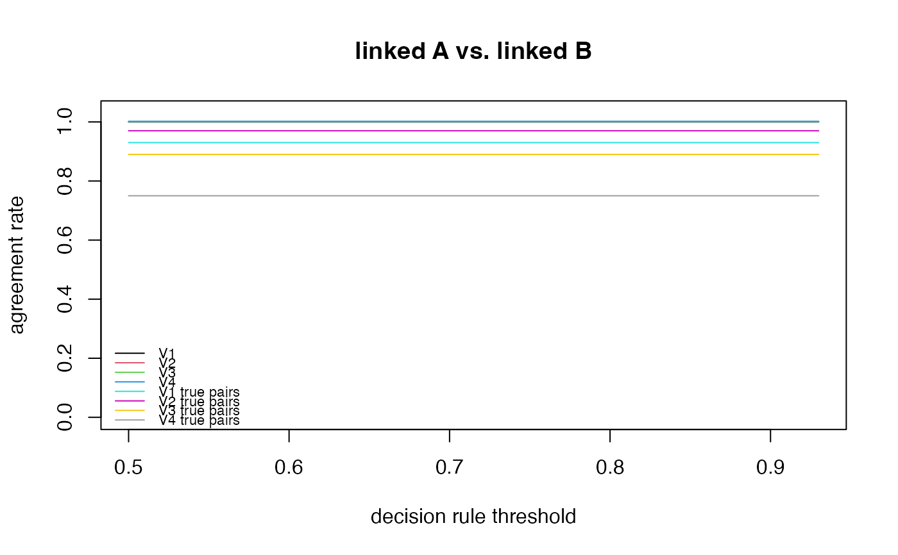
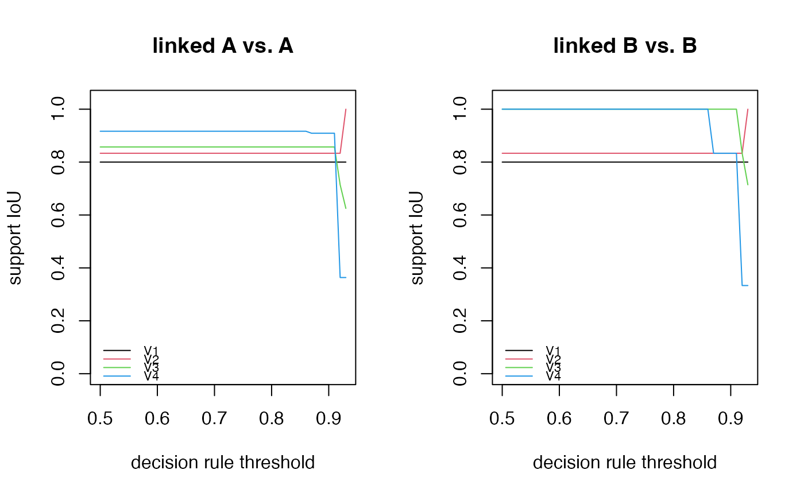
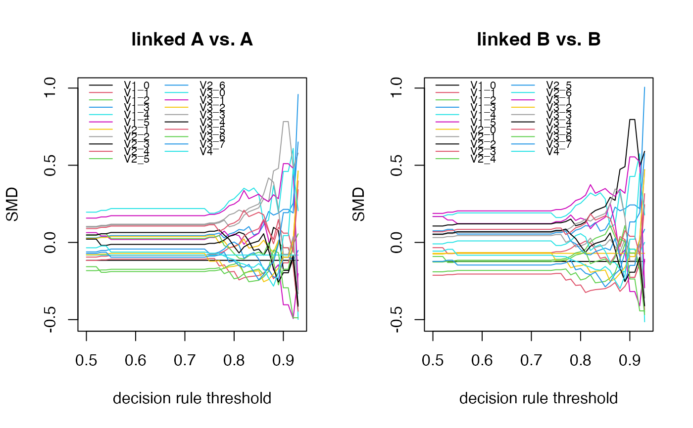

Gathers, from a fitted linkage, the diagnostics needed to judge the linked data before using it for inference: false discovery proportion estimate, agreement among PIVs of linked pairs, comparison of the linked subset with each source file (standardised mean differences, support overlap, maximum mean discrepancy).
Usage
RL_diagnostics(
fit,
encodedA,
encodedB,
compare_vars,
vars_type_cont,
PIVs,
true_pairs = NULL,
FDP_estimation = TRUE,
...
)Arguments
- fit
List with either
Delta(a data frame with columnsi,j,x, as returned byStEM()) or the three elementsidxA,idxB,LinkScore(e.g. the output of a link_with_* wrapper).- encodedA
Data source used for linkage (same encoding and row order as passed to the linkage method).
- encodedB
Data source used for linkage (same encoding and row order as passed to the linkage method).
- compare_vars
Character vector, variables (PIVs or others) to compare between the linked subset and each source file.
- vars_type_cont
Named list or logical vector, one entry per
compare_vars:TRUEif the variable is treated as continuous,FALSEif categorical (one SMD per level).- PIVs
Character vector, partially identifying variables to compare between the linked records from A and from B.
- true_pairs
Optional data frame with 2 columns of true (A, B) indices, when known, to report the realised FDP and sensitivity.
- FDP_estimation
Logical; if
TRUE, runcompute_RL_FDP_score()andcompute_augmRL_FDP_synth()to estimate the FDP over thresholds 0.50 to 0.95.RL_methodand other arguments must then be given in....- ...
Arguments passed to
compute_RL_FDP_score()andcompute_augmRL_FDP_synth()whenFDP_estimation = TRUE:RL_method,n_repeats,maxIter4CV, optionallysynth_method(default"arf"),n_synth,PIVs(defaultcompare_vars), and the arguments of the chosen link_with_* wrapper.
Value
An object of class "RL_diagnostics", a list with:
- discrepancy_measures
data frame (class
"discrepancy_curves"), one row per thresholdxi: number of linked pairs, agreement rate per variable (seeRL_agreement()), standardised mean differences (one per continuous variable or per level, seesmd()), support overlap per variable (seesupport_iou()) and multivariate discrepancy (seemmd()), each for the linked subset of A vs. A and of B vs. B- FDP_measures
FDP estimates by threshold (class
"FDP_curves") ifFDP_estimation = TRUE, elseNULL- true_agreement
only if
true_pairsis supplied: agreement rate of the true pairs on each ofcompare_vars, to compare with the agreement of the linked pairs- true_performance
only if
true_pairsis supplied: data frame with the realised FDP and sensitivity by threshold- idxA, idxB, LinkScore, RL_method, n_pairs, compare_vars, A, B
the linkage and data needed by the
print()andplot()methods- gamma, eta, alpha, phi
the StEM chains from
fit, if present
Details
All measures are computed for every threshold from 0.50 to 0.99
(by 0.01) on the linkage scores; for a method without scores (or with a
single score value) they are computed once, for all returned pairs.
print(x, threshold = ) summarises diagnostics at one threshold, plot()
shows the curves.
Examples
PIVs_config <- list( V1 = list(dynamics = "stable",
bound_mistakes = c(0.10,0.10),
fix_mistakes = c(NA,NA)),
V2 = list(dynamics = "stable",
bound_mistakes = c(0.10,0.10),
fix_mistakes = c(NA,NA)),
V3 = list(dynamics = "flexible",
bound_mistakes = c(NA,NA),
fix_mistakes = c(NA,NA)),
V4 = list(dynamics = "structured",
bound_mistakes = c(NA,NA),
fix_mistakes = c(0.03,0.03),
cond_hazard_cov = list(cov1=c("Xe", "Xf"),
cov2=c())) )
n_values <- c( 5, 6, 7, 12 )
p_mistake <- list( V1 = c(0.02, 0.02), V2 = c(0.02, 0.02),
V3 = c(0.05, 0.05), V4 = c(0.02, 0.02) )
p_missing <- list( V1 = c(0.005, 0.005), V2 = c(0.005, 0.005),
V3 = c(0.005, 0.005), V4 = c(0.005, 0.005) )
cond_hazard_params <- list( V1 = c(), V2 = c(),
V3 = c(), V4 = log(c(0.7, 0.6, 0.5)) )
gen_data <- simulate_data( PIVs_config, n_values, c(150, 200), 100,
p_mistake, p_missing, cond_hazard_params, TRUE )
prep_data <- prepare_data( gen_data$data1, gen_data$data2, "1", "2",
PIVs_config, TRUE, "entity_id", TRUE )
#> Warning: PIV 'V4': values out of the common support in data2 [1].
#> '2' is the larger source, saved as B; '1' saved as A.
PIVs <- names(PIVs_config)
PIVs_type <- list(V1=FALSE, V2=FALSE, V3=FALSE, V4=TRUE)
fit_brl <- link_with_BRL( prep_data$encodedA, prep_data$encodedB,
list( flds = PIVs,
types = rep("bi",length(PIVs)),
nIter = 500 ) )
diag_brl <- RL_diagnostics(fit_brl, prep_data$encodedA, prep_data$encodedB,
PIVs, PIVs_type, PIVs, true_pairs = prep_data$true_pairs,
FDP_estimation = TRUE, RL_method = "BRL",
flds = PIVs, types = rep("bi",length(PIVs)), nIter = 500,
maxIter4CV = 1, n_repeats = 1)
#>
#> FDP estimation on augmented RL taskIteration: 0, Accuracy: 42.97%
#> Warning: PIV 'V1': synthetic records out of the common support were removed.
#> Warning: PIV 'V3': synthetic records out of the common support were removed.
#> Warning: PIV 'V4': synthetic records out of the common support were removed.
#> BRL results (average over 1 iterations) (augmented RL task) `compute_augmRL_FDP_synth`
#> Decision rule threshold 0.5 0.55 0.6 0.65 0.7 0.75 0.8 0.85 0.9 0.95
#> FDP model score estimator 0.19 0.18 0.18 0.18 0.18 0.17 0.15 0.13 0.1 0
#> FDP synth data estimator 0 0 0 0 0 0 0 0 0 0
#> Linked pairs (augm. RL) 54 52 52 52 51 47 34 14 2 0
#> Linked pairs (RL) 54 52 52 52 51 47 34 14 2 0
#>
#> FDP estimation on original RL task
#> BRL results (average over 1 iterations) (original RL task) `compute_RL_FDP_score`
#> Decision rule threshold 0.5 0.55 0.6 0.65 0.7 0.75 0.8 0.85 0.9 0.95
#> FDP model score estimator 0.18 0.18 0.17 0.17 0.17 0.16 0.14 0.12 0.07 0
#> Linked pairs (RL) 56 55 53 53 53 48 39 22 1 0
diag_brl # print(diag_brl)
#> <RL_diagnostics>
#>
#> Linked pairs (score > 0.50): 56
#>
#> FDP (true pairs): 0.107
#> Sensitivity (true pairs): 0.521
#>
#> FDP score estimate (RL task): min threshold 0.50: FDP ~ 0.183
#> threshold 0.50: FDP ~ 0.183
#> max threshold 0.90: FDP ~ 0.073
#> FDP score estimate (augmented RL task): min threshold 0.50: FDP ~ 0.194
#> threshold 0.50: FDP ~ 0.194
#> max threshold 0.90: FDP ~ 0.097
#> FDP synth estimate (augmented RL task): min threshold 0.50: FDP ~ 0.000
#> threshold 0.50: FDP ~ 0.000
#> max threshold 0.90: FDP ~ 0.000
#> The score-based estimator is valid when the linkage model is well calibrated to the data.
#> The synthetic-data estimator is valid when the augmented task is equivalent to the
#> original one, which requires links and non-links to have similar distributions; similar
#> score-based FDP estimates on the original and augmented tasks support this prerequisite.
#>
#> Multivariate MMD (linked A vs. A): 0.0151
#> Multivariate MMD (linked B vs. B): 0.0109
#>
#> IoU support V1 (linked A vs. A): 1.0000
#> IoU support V2 (linked A vs. A): 0.8333
#> IoU support V3 (linked A vs. A): 1.0000
#> IoU support V4 (linked A vs. A): 0.9167
#> IoU support V1 (linked B vs. B): 0.8000
#> IoU support V2 (linked B vs. B): 0.8333
#> IoU support V3 (linked B vs. B): 1.0000
#> IoU support V4 (linked B vs. B): 0.8333
#>
#> Agreement V1 (linked A vs. linked B): 1.0000
#> Agreement V2 (linked A vs. linked B): 1.0000
#> Agreement V3 (linked A vs. linked B): 1.0000
#> Agreement V4 (linked A vs. linked B): 1.0000
#> Agreement V1 (true pairs): 0.9375
#> Agreement V2 (true pairs): 0.9375
#> Agreement V3 (true pairs): 0.9271
#> Agreement V4 (true pairs): 0.7708
#>
#> SMD V1 values: {2, 4, 5, ...} (linked A vs. A): 0.0990, 0.1067, -0.2388, ...
#> SMD V2 values: {0, 3, 4, ...} (linked A vs. A): -0.0816, 0.1353, -0.1922, ...
#> SMD V3 values: {1, 2, 5, ...} (linked A vs. A): 0.1170, 0.0904, -0.0964, ...
#> SMD V4 (linked A vs. A): -0.0939
#> SMD V1 values: {0, 3, 5, ...} (linked B vs. B): -0.1018, 0.1813, -0.1101, ...
#> SMD V2 values: {1, 3, 4, ...} (linked B vs. B): 0.1542, 0.1647, -0.2679, ...
#> SMD V3 values: {5, 6, 7, ...} (linked B vs. B): -0.0461, -0.1373, 0.1559, ...
#> SMD V4 (linked B vs. B): -0.0385
print(diag_brl, threshold = 0.75)
#> <RL_diagnostics>
#>
#> Linked pairs (score > 0.75): 48
#>
#> FDP (true pairs): 0.083
#> Sensitivity (true pairs): 0.458
#>
#> FDP score estimate (RL task): min threshold 0.50: FDP ~ 0.183
#> threshold 0.75: FDP ~ 0.157
#> max threshold 0.90: FDP ~ 0.073
#> FDP score estimate (augmented RL task): min threshold 0.50: FDP ~ 0.194
#> threshold 0.75: FDP ~ 0.172
#> max threshold 0.90: FDP ~ 0.097
#> FDP synth estimate (augmented RL task): min threshold 0.50: FDP ~ 0.000
#> threshold 0.75: FDP ~ 0.000
#> max threshold 0.90: FDP ~ 0.000
#> The score-based estimator is valid when the linkage model is well calibrated to the data.
#> The synthetic-data estimator is valid when the augmented task is equivalent to the
#> original one, which requires links and non-links to have similar distributions; similar
#> score-based FDP estimates on the original and augmented tasks support this prerequisite.
#>
#> Multivariate MMD (linked A vs. A): 0.0219
#> Multivariate MMD (linked B vs. B): 0.0160
#>
#> IoU support V1 (linked A vs. A): 1.0000
#> IoU support V2 (linked A vs. A): 0.8333
#> IoU support V3 (linked A vs. A): 1.0000
#> IoU support V4 (linked A vs. A): 0.9167
#> IoU support V1 (linked B vs. B): 0.8000
#> IoU support V2 (linked B vs. B): 0.8333
#> IoU support V3 (linked B vs. B): 1.0000
#> IoU support V4 (linked B vs. B): 0.8333
#>
#> Agreement V1 (linked A vs. linked B): 1.0000
#> Agreement V2 (linked A vs. linked B): 1.0000
#> Agreement V3 (linked A vs. linked B): 1.0000
#> Agreement V4 (linked A vs. linked B): 1.0000
#> Agreement V1 (true pairs): 0.9375
#> Agreement V2 (true pairs): 0.9375
#> Agreement V3 (true pairs): 0.9271
#> Agreement V4 (true pairs): 0.7708
#>
#> SMD V1 values: {1, 2, 5, ...} (linked A vs. A): 0.1022, 0.1880, -0.2957, ...
#> SMD V2 values: {0, 3, 4, ...} (linked A vs. A): -0.0816, 0.1275, -0.2084, ...
#> SMD V3 values: {1, 2, 7, ...} (linked A vs. A): 0.1733, 0.1498, -0.1541, ...
#> SMD V4 (linked A vs. A): 0.0146
#> SMD V1 values: {0, 3, 5, ...} (linked B vs. B): -0.1018, 0.2229, -0.1708, ...
#> SMD V2 values: {1, 3, 4, ...} (linked B vs. B): 0.0787, 0.1568, -0.2828, ...
#> SMD V3 values: {1, 2, 6, ...} (linked B vs. B): 0.0889, 0.1003, -0.1164, ...
#> SMD V4 (linked B vs. B): 0.0668
plot(diag_brl, "scores")

plot(diag_brl, "distributions", threshold = 0.75)


plot(diag_brl, "FDP")

plot(diag_brl, "discrepancy")



